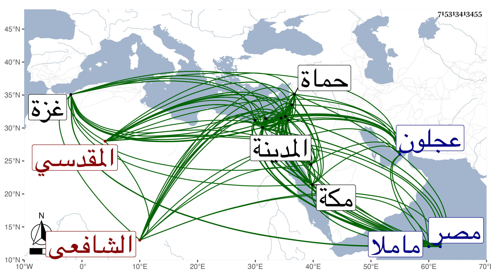

0902Sakhawi.DawLamic.ITO20230111-ara1.EIS1600.715313413455
Biography ID: 715313413455
514
عبد السلام بن داود بن عثمان بن القاضي شهاب الدين عبد السلام بن عباس العز السلطي الأصل المقدسي الشافعي ويعرف بالعز القدسي . ولد في سنة إحدى أو اثنتين وسبعين وسبعمائة بكفر الماء قرية بين عجلون وحبراض ، ونشأ بها فقرأ القرآن وفهمه عم والده الشهاب أحمد بن عبد السلام بعض مسائل ثم انتقل به قريبه البدر محمود بن علي بن هلال العجلوني أحد شيوخ البرهان الحلبي في حدود سنة سبع وثمانين إلى القدس فحفظ به في أسرع وقت عدة كتب في فنون بحيث كان يقضي العجب من قوة حافظته وعلو همته ويقظته ونباهته وبحث على البدر المذكور في الفقه إلى أن أذن له في الافتاء والتدريس سريعا ، ثم ارتحل به إلى القاهرة في السنة التي تليها فحضر بها دروس السراجين البلقيني وابن الملقن ، وسافر صحبة البدر إلى دمياط واسكندرية وغيرهما من البلاد التي بينهما كسنباط واجتمعا بقاضيها الفخر أبي بكر الحراني وقرأ على البدر حينئذ الجمال يوسف السنباطي والد العز عبد العزيز الآتي ثم رجعا إلى القاهرة ثم إلى القدس وسمع حينئذ بغزة على قاضيها العلاء علي بن علي بن خلف بن كامل السعدي أخي الشمس الغزي صاحب ديوان الفرسان ثم عادا لبلادهما ، ودخل صحبة البدر مدينة السلط والكرك وعجلون وحسبان وجال في تلك البلاد فلما مات البدر ارتحل إلى دمشق وذلك في حدود سنة سبع وتسعين وجد في الاشتغال بالحديث والفقه وأصله والعربية وغيرها من علوم النقل والعقل على مشايخها وسمع بها الحديث من جماعة كثيرين ، وحج في سنة ثمانمائة فسمع في توجهه بالمدينة النبوية على العلم سليمان السقا نسخة أبي مسهر وما معها وبمكة على الشمس بن سكر وابن صديق ثم رجع إلى دمشق فسمع بها الكثير خصوصا مع شيخنا وأكثر من السماع والشيوخ وممن سمع عليه من الدمشقيين إبراهيم بن العماد أحمد بن عبد الهادي وإبراهيم بن محمد بن أبي بكر بن عمر وأحمد بن اقبرص وأحمد بن العماد أبي بكر بن أحمد بن عبد الهادي وأحمد بن داود القطان والكمال أحمد ابن علي بن محمد بن عبد الحق وأحمد بن علي بن يحيى الحسيني والعماد أبو بكر ابن إبراهيم المقدسي وخديجة ابنة إبراهيم بن سلطان وخديجة ابنة أبي بكر الكوري ورقية ابنة علي الصفدي وزينب ابنة أبي بكر بن جعوان وعائشة ابنة أبي بكر بن قوام وعائشة ابنة محمد بن عبد الهادي وأختها فاطمة وعبد الرحمن بن عبد الله بن خليل الحرستاني وعبد الرحمن بن عمر البيتليدي وعبد القادر بن إبراهيم الأرموي وعبد القادر بن محمد بن علي سبط الذهبي وعبد القادر بن محمد ابن علي القمني والتقي عبد الله بن محمد بن أحمد بن عبيد الله وعلي بن غازي الكوري وعمر بن محمد بن أحمد بن سلمان البالسي وعمر بن محمد بن أحمد بن عبد الهادي وفاطمة ابنة عبد الله الحورانية وفاطمة ابنة محمد بن أحمد بن المنجا ومحمد بن أبي هريرة وعبد الرحمن بن الذهبي ومحمد بن علي بن إبراهيم البزاعي ومحمد بن محمد بن محمد بن أحمد بن منيع والبدر محمد بن محمد بن محمد بن محمد بن قوام ومحمد بن محمد ابن محمود بن السعلوسي ويوسف بن عثمان بن عمر العوفي وعنده عنه مسلسلات ابن شاذان باجازته التي انفرد بها من الرضى الطبري ، وبعد هذا كله انتقل في سنة ثلاث وثمانمائة بعد الفتنة إلى الديار المصرية فقطن القاهرة ولازم البلقيني في الفقه وغيره والزين العراقي في الحديث وكتب عنه من أماليه وغيرها وأثبت المملى اسمه بخطه في عدة مجالس وكان الهيثمي يحضرها ويجيز وكذا سمع فيما قبل هذا التاريخ وبعده على التنوخي والزين بن الشيخة وابن أبي المجد والحلاوي والسويداوي وآخرين وأجاز له ناصر الدين بن الفرات ومريم الاذرعية والشمس محمد بن إسماعيل القلقشندي وطائفة ، وأخذ عن العز بن جماعة من العلوم التي كان يقرئها وكذا أخذ عن الشهاب الحريري الطبيب في المعقولات أيضا وناب عن الجلال البلقيني في القضاء سنة أربع ثم أعرض عن ذلك لكون والده السراج عتبه عليه لتعطله به عن الاشتغال ، ثم عاد إلى النيابة في سنة تسع واستمر حتى صار من أجلاء النواب وصحب فتح الله كاتب السر ثم نوه به ناصر الدين بن البارزي حتى صار يزاحم الأكابر في المحافل ويناطح الفحول الأماثل بقوة بحثه وشهامته وغزارة علمه وفصاحته ، واستقر في تدريس الحديث بالجمالية عقب الكمال الشمني وتكلم شيخنا معه في أخذ شيء منه للتقي ولد المتوفي وفي تدريس الفقه بالخروبية بمصر ، وناب في الخطابة بالمؤيدية أول ما فتحت عن ابن البارزي ثم عن ولده الكمال واستقر به الزين عبد الباسط في مشيخة مدرسته بالقاهرة أول ما فتحت بل ولي مشيخة الصلاحية ببيت المقدس بعناية البدر بن مزهر بعد موت الشمس البرماوي وسافر لمباشرتها بعد أن رغب عن الجمالية لابن سالم والخروبية للمحب بن أبي المحاسن واستقر في الباسطية الامام شهاب الدين الأذرعي ثم صرف العز عن الصلاحية في خامس عشري ذي الحجة سنة ثمان وثلاثين بالشهاب بن المحمرة ورجع العز إلى القاهرة فأقام بها على نيابة القضاء وأضيف إليه قضاء النحرارية عوضا عن ابن قاسم مع مرتب رتبه له عبد الباسط إلى أن أعيد إلى الصلاحية بعد موت الشهاب واستمر فيها حتى مات وقد حدث بأشياء بالقاهرة وبيت المقدس وغيرهما ، وممن قرأ عليه قاضي المالكية بحماة أبو عبد الله محمد بن يحيى الحكمي المغربي ووصفه بشيخنا الامام العلامة شيخ الاسلام علم المحققين حقا وحائز فنون العلم صدقا ، وكذا درس وأفتى وأفاد وانتفع به الفضلاء سيما أهل تلك النواحي ، وكان إماما علامة داهية لسنا فصيحا في التدريس والخطابة وغيرهما حسن القراءة جدا مفوها طلق العبارة قوي الحافظة حتى في التاريخ وأخبار الملوك جيد الذهن حسن الاقراء كثير النقل والتنقيح متين النقد والترجيح وأقرأ هناك في جامع المختصرات فكان أمرا عجبا صحيح العقيدة شديد الحط والانكار على ابن عربي ومن نحا نحوه مغرما ببيان عقائدهم الرديئة وتزييفها مصرحا بأنهم أكفر الكفار جوادا كريما إلى الغاية قل أن ترى العيون في أبناء جنسه نظيره في الكرم مع كونه أكولا إلى الغاية مهابا لطيفا حسن الشكالة ضخما أجاز لي . ومات في يوم الخميس خامس رمضان سنة خمسين ببيت المقدس بعد تمرضه بالبواسير سنين ودفن بمقبرة ماملا رحمه الله وإيانا ومن نظمه :
| إذا الموائد مدت | من غير خل وبقل |
| كانت كشيخ كبير | عديم فهم وعقل |
وقوله :
| وذي قوام رطيب | وافي يؤم الأراكا |
| ناداني القلب ماذا | تريد قلت سواكا |
بل يقال إنه لم ينظم سوى هذين المقطوعين .
